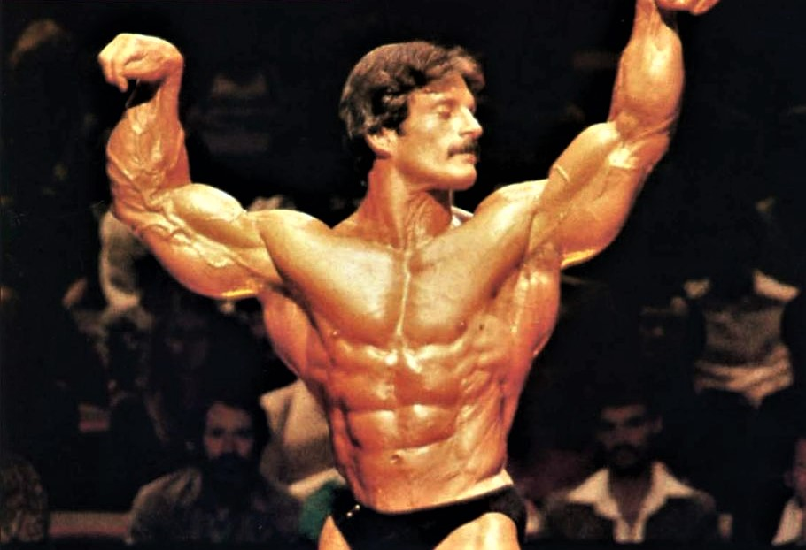
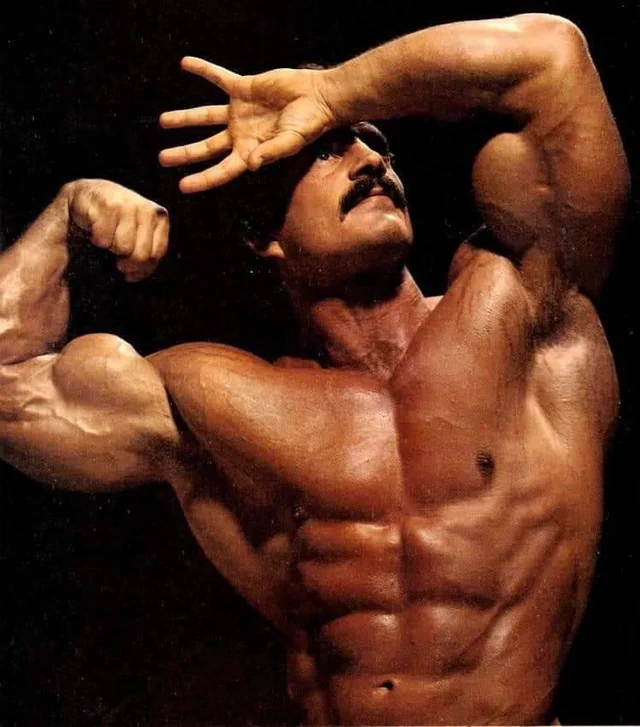
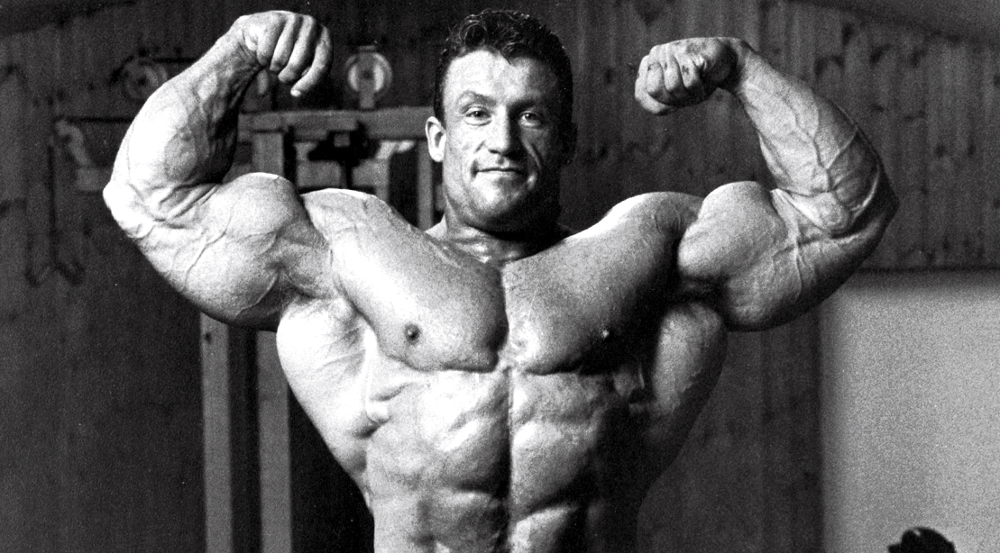
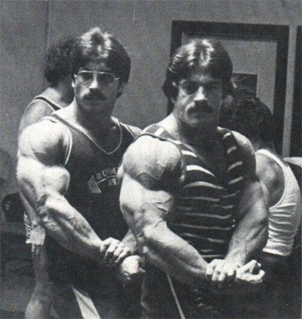

Heavy Duty: Logic, Intensity, Results

Mike Mentzer (1951–2001) was an American professional bodybuilder, author, and philosopher. He became the first man to receive a perfect score (300 out of 300) at the 1978 Mr. Universe.
Mentzer was not just an athlete; he was a thinker who challenged the "high volume" training of the Arnold Schwarzenegger era and introduced a system based on science and logic, which he called "Heavy Duty".
Bodybuilding is a science, not intuition. Muscle growth is a physiological process that requires a specific stimulus.
To stimulate growth, maximum effort is required. Training must be 100% intensity. The last rep must be absolute failure.
"Less is more." According to Mike, 1 working set (after warm-up) is completely sufficient. Extra sets only waste energy.
Muscle grows during rest. Mentzer recommended 4 to 7 days of rest between body parts.
This is Mentzer's later "Consolidated Program". Each exercise is performed to complete muscular failure.
Rest: 3-5 Days
Rest: 3-5 Days
Rest: 3-5 Days
Mentzer did not support "keto" or low-carb diets. He believed that carbohydrates are fuel for high-intensity training.
The Heavy Duty philosophy lives on through those who dared to challenge the status quo.

6x Mr. Olympia. The "Shadow" took Mentzer's High Intensity principles to the extreme, creating the "Blood & Guts" style. He proved that low volume and maximum intensity could build the greatest physique in the world.

Mike's brother and 1979 Mr. America. Ray was the embodiment of brute strength and density. He trained with even heavier weights than Mike, further validating the Heavy Duty system.
The next generation of Heavy Duty. Applying logic, science, and intensity to reach maximum genetic potential. The legacy continues here.